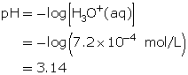
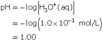
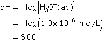

Read “6.3 Acid-Base Indicators” on pages 245 to 247 of your textbook.
As described in your textbook, the different colours of an indicator correspond to the different forms that indicator molecules can have. You may have noticed that the difference between the two forms, HIn and In−, is a hydrogen ion, H+. Can you describe a type of reaction that could be responsible for the loss or gain of an H+ by a substance?
Earlier in this module you wrote chemical equations describing reactions of acids and bases. You may have noticed that during a reaction, acids lose a hydrogen ion and bases gain a hydrogen ion. Indicators are weak acids and bases that will change form (and colour) in response to the solution in which they are dissolved. In basic solutions, litmus will exist in a form represented by the symbol, Lt−, which is blue. In acidic solutions, litmus will exist in a form represented by the symbol HLt, which is pink.
So far in this activity you have seen that compounds within tea and red cabbage can act as an acid-base indicator. Many indicators exist. Click on the following link to view a table that lists the indicators that are commonly used in laboratories. A similar version of this table appears in the back cover of your textbook and in the Chemistry Data Booklet.
Here is a brief explanation of each heading that appears in the Acid-Base Indicators table:
SC 1. Use the Acid-Base Indicator table to answer Section 6.3 Questions 1(a), 1(b), 1(d), and 2 on page 247 of your textbook.
SC 2. Two drops of orange IV indicator are added to a solution with a pH of 1.3. What is the colour of the indicator?
SC 3. A beaker containing hydrochloric acid has a hydronium-ion concentration of 7.2 × 10–4 mol/L. Determine the colour if a few drops of the following indicators are added to the acid solution.
SC 4. Thymol blue is added to two beakers containing hydrochloric acid. Determine the colour of the indicator for each of the following concentrations.
SC 1. Section 6.3 Questions 1(a), 1(b), 1(d), and 2 on page 247
SC 2. The colour of the orange IV is red for pH values that are less than or equal to 1.4.
SC 3. Determine the pH of the solution.

SC 4.

At this pH, thymol blue is red.
